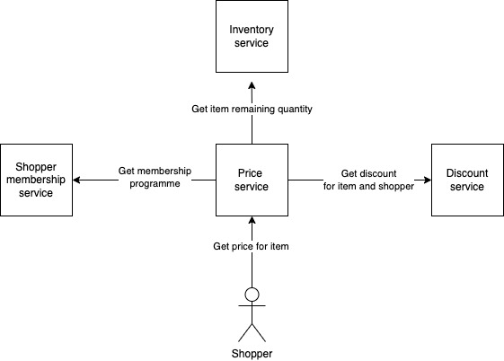

Introduction
Why read this book
Software design is a craft not a science. To master it you cannot just study a book that explains comprehensively all the theory behind it. You have to read the literature of many great developers, looking for advices that repeat: that's what is currently considered good software design. However, the literature is vast and it takes much time to get the big picture out of single sources. This book makes three promises:
- to be a compendium of what contributes to good software design
- to be very succinct
- to provide trustworthy sources to go deeper
Who should read this book
The book is intended mainly for people who just started their journey into software design or who are in the middle of it. If you have being seriously studying the topic for 5+ years, likely you are not going to find big surprises. However, I still suggest you to go through the table of contents: you might find one or two things worth a quick read. As a last consideration, the book is heavily skewed towards object-oriented programming though many advices apply to all programming paradigms. Code examples are written in Kotlin, but they are very basic so you do not need any prior knowledge (Kotlin enthusiasts will forgive me some syntax choices :) ).
Who I am
My name is Matteo Di Tucci, I currently work at ThoughtWorks. I picked up coding in university because I did not know what to do when growing up. I still do not know, but along the way I pleasantly discovered I like software and its design.
Teach me back
I really appreciate any feedback about the book and my current understanding of software design. You can share any feedback by creating a pull request. If you do not know what a pull request is, take a look here.
Simple code
It is hard to define what good design looks like: nobody was able to come up with a formal definition so far.
An approach I personally like is the C2 Wiki simple code rules.
Simple code:
- Passes all tests
- Expresses intent
- Does not repeat itself
- Does not contain superfluous parts
If a piece of code respects all those 4 rules then we can consider it good code.
This book is divided in 4 chapters, one for each of the simple code rules.
Reviewers
It passes all tests
The most important feature for a piece of software is that it behaves as expected. Tests reduce the likelihood of writing buggy code and without them software development becomes an exercise of faith. Although manually checking that everything works still qualifies as testing, the real power resides in automated tests. Writing tests little by little as we progress with a codebase, creates a safety net that is always available and provides us with an immediate feedback. It really is a super power and it gives us peace of mind.
Automated tests is one of the three pillars that took anxiety away from my work as a developer. The other two are continuous deployment and observability.
Test pyramid
There are different kinds of tests, each one meant for a different purpose. Before describing the most common ones, let's clarify in advance a couple of terms. For service we mean a bunch of code deployed as a whole. For external dependencies we mean anything that is reached over the network, like a database, another team REST endpoint, a queue, third party apis, etc.
- Acceptance tests
Check that a feature behaves as expected across all service layers (e.g. back end and front end) or even across different services. External dependencies are replaced through libraries like LocalStack or Wiremock. In a web application for instance, acceptance tests are defined with tools like Selenium or Cypress. - Functional tests
Check that a feature behaves as expected considering a single layer of a service. For example, if a service have both back end and front end, there will be distinct functional tests for the back end and front end. External dependencies are replaced either by libraries like LocalStack or by test doubles. Functional tests are also called component tests. - Integration tests
Check that a service integrates correctly with external dependencies. External dependencies are replaced by libraries like LocalStack or Wiremock. If test doubles are implemented in code without accessing the network then it is a unit test. - Unit tests
Check that code inside one class behaves as expected. Unit tests are most valuable when testing business logic: if a class is just a delegator or just coordinates other classes, do not use unit tests as functional tests already provide coverage. If the class under test uses other classes whose construction is cumbersome, those can be replaced with test doubles
The above list is ordered by how much time a test takes to execute, from the slowest (acceptance) to the fastest (unit). For this reason, it is recommended to have a pyramid of tests: a handful of acceptance tests, some functional and integration tests and many unit tests. In particular:
- Acceptance tests
Only for default uses of a feature - Functional tests
For both default and exceptional-erroneous uses of a feature - Integration tests
For both default and exceptional-erroneous integrations with external dependencies - Unit tests
For both default and exceptional-erroneous usage of a single class
Recommended reads
- Test Pyramid (in short) - Martin Fowler
- Test Pyramid (in depth) - Ham Vocke
- Growing Object-Oriented Software, Guided by Tests - Steve Freeman, Nat Pryce
- Fixing a Test Hourglass, Google testing blog - Alan Myrvold
- Test Pyramid vs Test Trophy - Martin Fowler
- The Practical Test Pyramid - Ham Vocke
Teach me back
I really appreciate any feedback about the book and my current understanding of software design.
If testing is hard, inject what you need to verify
When you have a hard time testing something, the solution is usually to inject the thing you would like to verify.
Suppose we are starting to implement a Car class that stores passengers by their name.
class Car {
private val passengers: MutableSet<String> = HashSet()
fun storePassenger(name: String) {
passengers.add(name)
}
}
How to test that the method storePassenger(name: String) stores a name into the passengers set?
The typical solution is to define another method in Car to check if it contains a passenger.
class Car {
private val passengers: MutableSet<String> = HashSet()
fun storePassenger(name: String) {
passengers.add(name)
}
fun containsPassenger(name: String): Boolean {
return passengers.contains(name)
}
}
So we can write the following test
@Test
fun `stores the names of the passengers`() {
val car = Car()
car.storePassenger("Andrea")
assertTrue(passengers.containsPassenger("Andrea"))
}
However, this is already a disappointment because we are forced to write a public method just for the sake of testing.
Moreover, what if by specifications we must prevent any other code to query Car about its passengers?
The solution can be to inject the passengers set a construction time.
class Car(private val passengers: MutableSet<String>) {
fun storePassenger(name: String) {
passengers.add(name)
}
}
Now we can test like follows.
@Test
fun `stores the names of the passengers`() {
val passengers = HashSet()
val car = Car(passengers)
car.storePassenger("Andrea")
assertTrue(passengers.contains("Andrea"))
}
By injecting the passengers set we can get rid of the useless containsPassenger method. Furthermore, we have now the
opportunity to make our code more modular, making Car independent of the data structure used to store the passengers.
For this, we can use MutableCollection<String> instead of MutableSet<String>
class Car(private val passengers: MutableCollection<String>) {
fun storePassenger(name: String) {
passengers.add(name)
}
}
Recommended reads
Teach me back
I really appreciate any feedback about the book and my current understanding of software design.
Test doubles
When testing a class, often we need to create a lot of objects just for the sake of the test. This happens for two reasons:
- All those objects are needed to make the test run (e.g. they are required by the constructor of the class under test)
- We want to verify how the class under test interacts with those objects (e.g. if the class under test calls the public method of another one)
Because of the above, tests can become time-consuming and tedious. Fortunately, we can remediate by using test doubles. For the sake of development speed, test doubles are usually created via testing libraries. For instance, in Kotlin there is MockK among others. Taking the following code as example, let's define the different types of test doubles and how they look like in a test when using a library like MockK.
class Greeter(private val validator: Validator) {
fun greetings(): String {
return "Hello"
}
fun personalisedGreetings(name: String): String {
if (validator.isValid(name))
return "Hello $name"
return "Not a valid name"
}
}
class Validator {
fun isValid(name: String): Boolean {
if (name.isEmpty())
return false
return true
}
}
Stubs
They return a hardcoded response. In the following test, validator is a stub. Unfortunately mocks
and stubs in MockK are both defined as mockk<>() which makes it confusing for newcomers.
@Test
fun `greets by name`() {
val validator = mockk<Validator>()
every{ validator.isValid("Andrea") } returns true
val controller = Greeter(validator)
val result = controller.personalisedGreetings("Andrea")
assertEquals("Hello Andrea", result)
}
Mocks
They have two responsibilities:
- they return a hardcoded response
- the test checks that their public methods are called with specific input parameters
In the following test,
validator is a mock.
@Test
fun `performs successful validation on the name`() {
val validator = mockk<Validator>()
every{ validator.isValid("Andrea") } returns true
val controller = Greeter(validator)
controller.personalisedGreetings("Andrea")
verify{ validator.isValid("Andrea") }
}
Spies
The test checks that their public methods are called with specific input parameters. In the
following test, validator is spy.
@Test
fun `performs validation on the name`() {
val name = "Andrea"
val validator = spyk<Validator>()
val controller = Greeter(validator)
controller.personalisedGreetings(name)
verify{ validator.isValid(name) }
}
Dummies
They are used to run the test but they do not take any part in it, meaning no public method of theirs is called.
For instance, validator in the following test is a dummy as the method greetings does not interact with validator.
@Test
fun `greets by saying Hello`() {
val validator = mockk<Validator>()
val controller = Greeter(validator)
val result = controller.greetings()
assertEquals("Hello", result)
}
Fakes
An object with very limited capabilities compared to the real one but much faster to create. The typical example is
an in memory database (e.g. H2) instead of a production one (e.g. PostgreSQL)
As a final note, test doubles are not used just for unit tests, but throughout the whole testing pyramid.
Recommended reads
- Mocks aren't stubs - Martin Fowler
- Only mock type that you own, chapter 8 of Growing Object-Oriented Software, Guided by Tests - Steve Freeman, Nat Pryce
- Don't mock what you don't own, contributing-tests wiki - Justin Searls
Teach me back
I really appreciate any feedback about the book and my current understanding of software design.
Test driven development
Test driven development (TDD) is an approach to development where tests are written before the actual code. The core of TDD is a three steps process:
- Write a failing test
- Make the test pass
- Refactor
Let's go through each step using the following specifications as example:
- I want measure things in meters
- I want to be able to sum two measurements in meters
Write a failing test
At this step we pick a single aspect of the specification we want to verify: the smallest the better. The common mistake
here is to overthink it because we want to take into account all the specifications and their nuances. Don't do it now,
the third step will take care of it. For now let's just write a test even if it seems silly for how simple it is. Moreover,
don't focus on writing good code either: the third step will take care of this as well. Finally, remember to run the test
and see it failing with the error we expect: we do not want to later discover that our tests are passing by luck.
@Test
fun `summing 1 meter and 2 meters returns 3 meters`() {
val result = MeasureInMeters(1).add(MeasureInMeters(2))
assertEquals(MeasureInMeters(3), result)
}
Make the test pass
Now that we have a failing test we need to make it pass. Be mindful that compilation errors in the test is the same of
running it and see it fail. At this step as at the previous, let's not focus about writing good code, that's something for
the third step: just make the test pass, whatever it takes.
data class MeasureInMeters(private val amount: Int) {
fun add(measureInMeters: MeasureInMeters): MeasureInMeters {
return MeasureInMeters(3)
}
}
(In Kotlin, the data class keyword makes sure that two instances of Meter are equal if their amount is equal).
Refactor
In this step we improve the test and the actual code we have written. Let's start from the naming.
@Test
fun `adding 1 meter and 2 meters returns 3 meters`() {
val result = Measure(1).add(Measure(2))
assertEquals(Measure(3), result)
}
data class Measure(private val amount: Int) {
fun add(measure: Measure): Measure {
return Measure(3)
}
}
Let's also generalise the body of the method sum for all integers as we already understand it won't work for another
pair of numbers.
data class Measure(private val amount: Int) {
fun add(measure: Measure): Measure {
return Measure(amount + measure.amount)
}
}
The third step is also when we look at the bigger picture. In this example there is little to do, but usually this is the moment when we pay attention on how the new code we are writing fits into the existing codebase (e.g. knowledge duplication, edge cases for some other classes we did not think before, etc.). We do not need to address these concerns right away, but it is good to note them down so we can tackle them once we have done satisfying the bit of specifications we are currently working on. Once we are happy with the quality of the code we have just written, we can restart the three steps process. The focus will be either another test for the bit of specification we are focusing on (e.g. adding 2 negative integers) or a test for another bit of the specifications.
Compared to writing tests after the implementation, the main benefit of TDD is that it becomes much harder to write code that is not tested. However, be mindful that we can still write buggy code even if we use TDD as described in the test coverage is not enough section.
Recommended reads
- Test-Driven Development: By Example - Kent Beck
- Growing Object-Oriented Software, Guided by Tests - Steve Freeman, Nat Pryce
- Shameless green, chapter 1 of 99 bottles of OOP, Sandy Metz
- Test contravariance - Robert C. Martin
- "Testing shows the presence, not the absence of bugs" - Edsger W. Dijkstra
- London vs Chicago school, contributing-tests wiki - Justin Searls
- Need driven development, Mock Roles, not Objects - Steve Freeman, Nat Pryce, Tim Mackinnon, Joe Walnes
- London vs Chicago - Robert C. Martin, Sandro Mancuso
Teach me back
I really appreciate any feedback about the book and my current understanding of software design.
Test coverage is not enough
Test coverage measures how much code in a codebase is invoked when we run all tests. However, it is not a measure of quality of the tests. This means a codebase with 100% of coverage can still be plenty of bugs. Let's take as example the following code.
data class Bill(private val amount: Int) {
fun split(parts: Int): Bill {
return Bill(amount / parts)
}
}
@Test
fun `split the bill in equal parts for 4 people`() {
val bill = Bill(100)
val result = bill.split(4)
assertEquals(Bill(25), result)
}
(In Kotlin, the data class keyword makes sure that two instances of Bill are equal if their amount is equal).
The above code has 100% test coverage. However, we could break it by simply calling split(0) over Bill.
For this reason, it is important to test against as many inputs as possible. For instance, in the above example this means
trying different input parameters for the Bill constructor and for the split method. Defining one test for each possible
combination of inputs is not feasible, but there are some testing methodologies that let us test for many inputs in very little time:
- Parameterized testing: execute one test multiple times specifying different input parameters
- Property based testing: execute one test multiple times specifying which kind of inputs are valid and letting a library randomly generate them
Recommended reads
- Parameterised testing with Junit in Kotlin - Baeldung
- Jqwik, a property based testing library in Java
- Fuzz testing
- Formal verification
Teach me back
I really appreciate any feedback about the book and my current understanding of software design.
Test must be reproducible
A test must not change throughout different executions, otherwise we would be running a different test every time. The risk is ending up with tests that fail without apparent reason or worse with tests passing despite the presence of bugs. Let's consider the following example.
class AnnualSubscription(private val validityYear: Int) {
fun isValid(currentDate: LocalDate): Boolean {
return validityYear == currentDate.year
}
}
@Test
fun `is valid during the year the subscription was made`() {
val book = AnnualSubscription(2021)
val result = book.isValid(LocalDate.now()) // today is the 3rd of March 2021
assertTrue(result)
}
The above test always passes during 2021. However, it will start failing from the 1st of January 2022 because of LocalDate.now().
To make the test deterministic we have to replace LocalDate.now() with a constant date like follows.
@Test
fun `is valid during the year the subscription was made`() {
val book = AnnualSubscription(2021)
val result = book.isValid(LocalDate.of(2021, Month.MARCH, 3))
assertTrue(result)
}
Recommended reads
Teach me back
I really appreciate any feedback about the book and my current understanding of software design.
No production code constants in tests
When writing tests, we might be tempted to use production code constants to remove duplication. This creates a conflict of interests by which a test is defined using part of the code that is supposed to test. Such a situation can lead to bugs going unnoticed like in the following example.
(In Kotlin, companion object is the way to define constants known at compile time, the equivalent of static in Java)
class Greeter {
fun greet(name: String): String {
return "$DEFAULT_GREETING $name"
}
companion object {
const val DEFAULT_GREETING: String = "Hello"
}
}
@Test
fun `greet by name`() {
val greeter = Greeter()
val result = greeter.greet("Andrea")
assertEquals("${Greeter.DEFAULT_GREETING} Andrea", result)
}
The problem with the above code is that if by mistake we change the value of DEFAULT_GREETING from "Hello" to "Hellozxhgj"
the test will still pass as it would be expecting "Hellozxhgj Andrea". To catch this kind of bugs is
enough not to use the production constant DEFAULT_GREETING in the test like follows.
@Test
fun `greet by name`() {
val greeter = Greeter()
val result = greeter.greet("Andrea")
assertEquals("Hello Andrea", result)
}
Teach me back
I really appreciate any feedback about the book and my current understanding of software design.
Do not test libraries
Here also mention to not mock what you don't own and to use an adapter pattern instead
Recommended reads
- Don't mock a type you don't own! - Mockito wiki
- That's Not Yours - Eric Smith
- Don't mock types you don't own - David Tchepak
Teach me back
I really appreciate any feedback about the book and my current understanding of software design.
Expand and contract
When we change the signature of a public method, we need to adjust all its client code accordingly. In big codebases this implies a single, time-consuming refactoring which can lead to version control conflicts (e.g. git merge conflicts) with other developers. However, we can break down this big refactoring into smaller steps by leveraging a technique called expand and contract. Let's take the following code as an example:
import java.math.BigDecimal
class Price(private val amount: BigDecimal) {
fun discountedOf(percentage: BigDecimal): Price {
val discount = amount.multiply(percentage.divide(BigDecimal(100)))
return Price(amount.subtract(discount))
}
}
The percentage input parameter of the method discountedOf can be problematic as there is no guarantee for it to be between 0 and 100.
For this reason, we want to introduce a class Percentage so that the signature of the method discountedOf can become discountedOf(percentage: Percentage).
Let's see how we can do this in small steps with the expand and contract technique.
1. Expand
Instead of modifying the signature of the method discountedOf right away, we add a new method newDiscountedOf which has the desired new signature:
import java.math.BigDecimal
class Price(private val amount: BigDecimal) {
fun newDiscountedOf(percentage: Percentage): Price {
val discount = percentage.of(amount)
return Price(amount.subtract(discount))
}
fun discountedOf(percentage: BigDecimal): Price {
val discount = amount.multiply(percentage.divide(BigDecimal(100)))
return Price(amount.subtract(discount))
}
}
class Percentage(private val percentage: BigDecimal) {
init {
require(percentage in BigDecimal(0)..BigDecimal(100) ) {
"Percentage must be between 0 and 100"
}
}
fun of(amount: BigDecimal): BigDecimal {
return amount.multiply(percentage.divide(BigDecimal(100)))
}
}
At this point for the client code nothing has changed: everybody still use the method discountedOf while newDiscountedOf
is dead code.
2. Migrate clients one by one
Now we can migrate the client code. However, instead of doing it all at once, we can refactor one client at a time.
In this way we can gradually increase the usage of newDiscountedOf while reducing the one of discountedOf.
Each client migration can be a standalone code revision (git commit), so the changes are small and incremental while
the entire codebase keeps working as expected.
3. Contract
When all clients have been migrated, the method discountedOf is now dead code, so we can delete it and rename the method
newDiscountedOf into discountedOf. The final result looks like the following:
import java.math.BigDecimal
class Price(private val amount: BigDecimal) {
fun discountedOf(percentage: Percentage): Price {
val discount = percentage.of(amount)
return Price(amount.subtract(discount))
}
}
class Percentage(private val percentage: BigDecimal) {
init {
require(percentage in BigDecimal(0)..BigDecimal(100) ) {
"Percentage must be between 0 and 100"
}
}
fun of(amount: BigDecimal): BigDecimal {
return amount.multiply(percentage.divide(BigDecimal(100)))
}
}
The end result is the same as we would have done it in one shot. However, we made the refactoring more maneageable by breaking it down into smaller steps.
Further applications
Expand and contract is very useful to avoid merge conflicts, no matter if you are using trunk base development or feature branches. Especially with trunk based development, it plays very well with the use of feature toggles.
Furthermore, despite the above example is about a class method, the same approach is applicable to api contracts. Let's assume for instance a POST REST API with the following body:
{
"price" : 72.9,
"discount" : 15
}
Then, let's assume we want to change "discount" from an integer to a percentage expressed as a decimal between 0 and 1.
Using the expand and contract approach, we would first expand:
{
"price" : 72.9,
"discount" : 15,
"discount_percentage" : 0.15
}
Then migrate all clients to use "discount_percentage" instead of "discount" and finally contract:
{
"price" : 72.9,
"discount_percentage" : 0.15
}
Last but not least, we can use expand and contract also for database schema migrations.
Recommended reads
- Surviving continuous deployment in distributed systems - Valentina Servile
- Refactoring Databases: Evolutionary Database Design - Scott Ambler, Pramod Sadalage
- Parallel change - Scott Ambler, Joshua Kerievsky
- Parallel change - Danilo Sato
Teach me back
I really appreciate any feedback about the book and my current understanding of software design.
Performance tests
Recommended reads
Teach me back
I really appreciate any feedback about the book and my current understanding of software design.
How to test UI
screenshot and snapshot testing
Linting
Test for production
Correct code which passes all tests can still fail once deployed in production.
This happens because tests do not account for failures.
Example of failures are external apis being slow to respond or a spike of user requests saturating hardware resources.
To make our code resilient we need to embrace failure and mitigate its impact.
Failure usually happen where our code accesses the network (e.g. database, external api, etc.). The following approaches help to mitigate its impact:
- Fail fast
When an external dependency is down, it is better to present users with errors for some functionality than bringing down the whole application. Use timeouts and circuit breakers on client side. - Isolate failures
Each integration point should have its own pool of resources (e.g. thread pool, connection pool, etc.) Use bulkheads. - Buffer loads
Improve availability by absorbing load in buffers. Use queues and user notifications instead of synchronous responses. - Test error scenarios
Use integration tests that simulates error cases like server timeout, connection error, slow responses, etc.
Recommended reads
- Release It!: Design and Deploy Production-Ready Software (2nd edition) - Michael T. Nygard
- Chaos Engineering - Wikipedia
- It takes more than a Circuit Breaker to create a resilient application - Bilgin Ibryam
- Fault Tolerance in a High Volume, Distributed System - Ben Christensen
- Circuit breaker pattern - Microsoft
- Bulkhead pattern - Microsoft
- Fuzz testing - Gitlab
Teach me back
I really appreciate any feedback about the book and my current understanding of software design.
Tests for distributed systems
When testing a functionality that spans across multiple microservices, there are some tradeoffs to make between tests maintainability and coverage.
As an example, let's take a Price microservice which needs to contact three other microservices to be able to calculate a price.
We are responsible for the Price microservice only, while other teams take care of Membership, Discount and Inventory microservices respectively.

Let's assume we want to write an acceptance test to verify the functionality of calculating a price.
For this purpose, we need also the other three microservices to be up running while the acceptance test runs.
Usually there are four ways to achieve this. Each one has pros and cons, but in my experience, the first has proved to be superior.
In all four alternatives, when we say locally, we mean both the developers laptops and the continuous integration machine.
Stub the three microservices integration locally and use in depth smoke tests
The acceptance test is converted into a functional test that runs locally and a smoke test that runs against the different environments (e.g. development and production). Regarding the functional test, the Price service is started by stubbing the integration with the other three microservices. This means that despite the integration with the three microservices might happen over https, when the functional test runs, there is no network or other infrastructure involved.
Regarding the smoke test, it triggers the real integration between the four microservices, as a production shopper request would do.
Pros:
- The smoke test verifies the real logic for both 4 microservices
- No extra infrastructure needed locally
- No powerful hardware needed locally
- Chance of writing many functional tests in exchange for the acceptance test as the former is faster to run, write and maintain than the latter
- No need to worry about authentication at functional test level
Cons:
- Integration bugs between microservices cannot be caught locally: they will be visible during the smoke test execution.
This late feedback loop around integration can be fixed by using contract testing (see resources section below) - Difficult to stub the three microservices integration if infrastructure is mixed with domain inside the Price service codebase
Integrate with the other three microservices deployed in dev environment
This implies that the acceptance test reaches out to the dev environment where Inventory, Discount and Membership microservices are deployed.
Pros:
- The acceptance test verifies the real logic for both 4 microservices, nothing is stubbed
- No extra infrastructure needed locally
- No powerful hardware needed
Cons
- Network connectivity is needed
- Extra network configuration (e.g. VPN, firewall rules)
- Risk of race conditions on test data related to the three microservices as multiple devs and continuous integration machine might run tests simultaneously
- Extra work possibly needed for authentication
Run the other three microservices locally
This implies fetching the executables of the other three microservices (e.g. Docker images, jar, etc.) and running them locally while the acceptance test is executed.
Pros:
- The acceptance test verifies the real logic for both 4 microservices, nothing is stubbed
Cons:
- Acceptance test is slow as all fours microservices have to startup first
- More powerful hardware is needed (usually ram and cpu) locally
- Extra infrastructure is needed to make available the Inventory, Discount and Membership microservices executables (e.g. VPN, access policies configuration, firewall rules, etc.)
- Extra setup is needed locally to run the acceptance tests (e.g. install Docker)
- Extra work possibly needed for user authentication
Stub the three microservices locally
This implies using libraries like WireMock server to stub the responses from the other three microservices.
Pros:
- No network connectivity needed
Cons:
- Slower acceptance test as 3 microservices stubs need to startup
- External library as extra test dependency
- If any api contract change happens in the other three microservices, the acceptance test won't fail
- Requires effective and timely communication between the four microservices teams to notify and adjust any api contract change
Recommended reads
- Testing strategies in a microservice architecture - Toby Clemson
- Contract testing - Ham Vocke
- QA in production - Rouan Wilsenach
- Synthetic Monitoring - Flávia Falé, Serge Gebhardt
Teach me back
I really appreciate any feedback about the book and my current understanding of software design.
Test infrastructure
Recommended reads
Teach me back
I really appreciate any feedback about the book and my current understanding of software design.
It expresses intent
Before changing a piece of code, we first need to understand its intention, meaning what it is supposed to do. Not understanding code, or even worse misunderstanding it, leads to a great waste of time. Therefore, pouring effort in clarifying code intent is a sound investment as code is written once and read many times.
Software design is a collaborative activity and code intent is the expression of people mental representations. This means that clear code intent starts with effective communication: knowledge sharing, visualising mental models, using a shared vocabulary.
Naming
Great naming let us understand what the code means without inspecting its details. In fact, we should be able to understand an entire codebase just reading the names of classes, methods and variables, never looking at what they contain. This clarity is reached by naming classes, methods and variables after what they do instead of how they do it. The how can be looked up later if more details are needed by inspecting the content. The benefits are two:
- names do not contain any noise
- if the implementation changes, the name remains relevant
Let's consider the following class
class BiDimensionalCoordinates(private val x: Int, private val y: Int) {
fun sumByXandY(addend: BiDimensionalCoordinates): BiDimensionalCoordinates {
return BiDimensionalCoordinates(x + addend.x, y + addend.y)
}
}
In the above code, both class and method names leak the how. Given the distinction we made about the what and the how,
we can ask ourselves two questions. The first one is: if we remove the how from the BiDimensionalCoordinates names, does the class
still express intent? Let's see.
class Coordinates(private val x: Int, private val y: Int) {
fun sum(addend: Coordinates): Coordinates {
return Coordinates(x + addend.x, y + addend.y)
}
}
The answer is yes, as the above class still expresses clear intent, without even bothering the reader with the noise of the how.
The second questions is: would the naming in BiDimensionalCoordinates still make sense if we were to switch to three-dimensional
coordinates? Let's see.
class BiDimensionalCoordinates(private val x: Int,
private val y: Int,
private val z: Int) {
fun sumByXandY(addend: BiDimensionalCoordinates): BiDimensionalCoordinates {
return BiDimensionalCoordinates(x + addend.x, y + addend.y, z + addend.z)
}
}
The answer is no. BiDimensionalCoordinates now does not express its intent anymore as it is lying to the reader:
the names suggest two dimensions coordinates when they are actually three. However, the Coordinates class would still express
its intent even when using three dimensions as shown below.
class Coordinates(private val x: Int,
private val y: Int,
private val z: Int) {
fun sum(addend: Coordinates): Coordinates {
return Coordinates(x + addend.x, y + addend.y, z + addend.z)
}
}
As a final note for typed languages, be mindful that the return type of a method is part of its naming. A method sum
does not clearly expresses intent if its signature is like the following: fun sum(addend: Coordinates): Int
Recommended reads
- Names, section 1.1.1 of 99 bottles of OOP - Sandy Metz
- Choosing Names, section 2.8 of 99 bottles of OOP - Sandy Metz
- Meaningful Names, chapter 2 of Clean Code - Robert C. Martin
- Replace Magic Number with Symbolic Constant, chapter 8 of Refactoring - Martin Fowler
- Developing a Ubiquitous Language, chapter 2 of Domain-Driven Design Distilled - Vaughn Vernon
Teach me back
I really appreciate any feedback about the book and my current understanding of software design.
Deep and narrow classes
We are doomed to write convoluted code when interacting with classes that have poor public methods. On the contrary,
we are brought to write readable code when interacting with classes that have great public methods. Let's consider
the following play public method for the FizzBuzz game.
class FizzBuzz {
fun play(number: Int): String {
if (number % 5 == 0 && number % 3 == 0)
return "fizz buzz"
if (number % 5 == 0)
return "buzz"
if (number % 3 == 0)
return "fizz"
return number.toString()
}
}
The above signature of the play method leads to the following code when playing with the numbers between 1 and 100.
class App {
fun main() {
val fizzBuzz = FizzBuzz()
val result = ArrayList<String>()
for (number in 1..100)
result.add(fizzBuzz.play(number))
}
}
Now, let's change the signature of the play method like follows.
class FizzBuzz {
fun play(from: Int, to: Int): List<String> {
val result = ArrayList<String>()
for (number in from..to)
result.add(playSingleNumber(number))
return result
}
private fun playSingleNumber(number: Int): String {
if (number % 5 == 0 && number % 3 == 0)
return "fizz buzz"
if (number % 5 == 0)
return "buzz"
if (number % 3 == 0)
return "fizz"
return number.toString()
}
}
The above signature of the play method leads to the following code when playing with the numbers between 1 and 100.
class App {
fun main() {
val fizzBuzz = FizzBuzz()
val result = fizzBuzz.play(1, 100)
}
}
Now the main method is more readable. The for-loop has not disappeared, it just moved from App to FizzBuzz.
However, such a shift becomes remarkable if applied to a codebase with many classes:
- In the first approach, the for-cycle is repeated every time a piece of code interacts with
FizzBuzz. In the second approach, we are guaranteed the for-cycle is written only once: insideFizzBuzz. - If
maininteracted with 4 classes each one using the first approach ofFizzBuzz,mainwould contain 4 for-loops. If the 4 classes were to use the second approach,mainwill contain zero for-loops.
To summarise with a catchphrase from John Ousterhout, classes should be narrow and deep:
- narrow means few public methods with few input parameters
- deep means public methods get a lot of things done for the caller
Recommended reads
- "Bad programmers worry about the code. Good programmers worry about data structures and their relationships" - Linus Torvalds
- "Show me your tables, and I won't usually need your flowcharts; they'll be obvious.", chapter 9 of The Mythical Man-Month - Fred Brooks
- ava and Unix I/O, section 4.7 of A Philosophy of Software Design - John Ousterhout
- A web of objects, chapter 2 of Growing Object-Oriented Software, Guided by Tests - Steve Freeman, Nat Pryce
- Choosing Names, section 2.8 of 99 bottles of OOP - Sandy Metz
- The interface segregation principle, chapter 10 of Clean Architecture - Robert C. Martin
Teach me back
I really appreciate any feedback about the book and my current understanding of software design.
Immutability
Understanding a piece of code is harder if objects can change their state. Let's take a look at the following example.
enum class LightBulbState {
ON {
override fun lightUp(): String = "bright"
},
OFF {
override fun lightUp(): String = "dark"
};
abstract fun lightUp(): String
}
class LightBulb(private var state: LightBulbState) {
fun lightUp(): String {
return state.lightUp()
}
fun setState(newLightBulbState: LightBulbState) {
state = newLightBulbState
}
}
class Room {
private val lightBulb: LightBulb
constructor(lightBulb: LightBulb) {
lightBulb.setState(LightBulbState.OFF)
this.lightBulb = lightBulb
}
}
class App {
fun main() {
val lightBulb = LightBulb(LightBulbState.ON)
val room = Room(lightBulb)
val result = "The room is ${lightBulb.lightUp()}"
}
}
Just looking at the main method of App, we would expect result to be The room is bright. However, because of the
Room constructor, the actual content of result is The room is dark. To avoid this bad surprise, LightBulb can become
immutable, meaning its state cannot be modified. Let's take a look how we can achieve this.
enum class LightBulbState {
ON {
override fun lightUp(): String = "bright"
},
OFF {
override fun lightUp(): String = "dark"
};
abstract fun lightUp(): String
}
class LightBulb(private val state: LightBulbState) {
fun lightUp(): String {
return state.lightUp()
}
fun setState(newLightBulbState: LightBulbState): LightBulb {
return LightBulb(newLightBulbState)
}
}
class Room {
private val lightBulb: LightBulb
constructor(lightBulb: LightBulb) {
this.lightBulb = lightBulb.setState(LightBulbState.OFF)
}
}
class App {
fun main() {
val lightBulb = LightBulb(LightBulbState.ON)
val room = Room(lightBulb)
val result = "The room is ${lightBulb.lightUp()}"
}
}
App().main()
The above code differs from the original one for three aspects:
- The
setStatemethod ofLightBulbdoes not modify its state, instead it returns a brand-new instance ofLightBulb - The constructor of
Roomstores the brand-newLightBulbreturned by the invocation ofsetState, instead of theLightBulbpassed as a constructor parameter - The
LightBulbconstructor usesvalinstead ofvar(in Kotlin a variable defined asvalcannot be re-assigned)
Now the content of result in the main method of App is what we would expect from the beginning: The room is bright.
Immutability makes it easier to reason about a piece of code and it is a game changer when concurrency
comes into play. To obtain immutability we need to:
- return a new instance of an object instead of modifying its state
- prevent the re-assignment of variables
Unfortunately it can be tricky to write immutable code. Let's take a look at the following piece of example.
class Shelf(private val books: List<String>) {
fun numberOfBooks(): Int {
return books.size
}
}
class App {
fun main() {
val books = mutableListOf("The Secret Adversary", "The Big Four")
val shelf = Shelf(books)
books.add("Giant's Bread")
val result = "The shelf contains ${shelf.numberOfBooks()} books"
}
}
The content of result in the main method of App will be The shelf contains 3 books. In fact, even if Shelf uses
val and does not allow its state to change, the books list can still be modified by code outside Shelf. For Shelf
to be immutable, it has to make a local copy of the books list received in the constructor as follows.
class Shelf {
private val books: List<String>
constructor(booksForShelf: List<String>) {
books = booksForShelf.toList() // toList makes an exact copy
}
fun numberOfBooks(): Int {
return books.size
}
}
class App {
fun main() {
val books = mutableListOf("The Secret Adversary", "The Big Four")
val shelf = Shelf(books)
books.add("Giant's Bread")
val result = "The shelf contains ${shelf.numberOfBooks()} books"
}
}
The content of result in the main method of App is now The shelf contains 2 books.
As a final note, reasoning about state is hard and that's why it is worth deepen the paradigm of functional programming which removes the concept of state as much as possible.
Recommended reads
- Appreciating Immutability, section 5.3 of 99 bottles of OOP - Sandy Metz
- Make defensive copies when needed, chapter 9 of Effective Java second edition - Joshua Bloch
- Practical Function Programming in Scala - Gabriel Volpe
- Domain Modeling Made Functional - Scott Wlaschin
Teach me back
I really appreciate any feedback about the book and my current understanding of software design.
Generalise edge cases
Generalising edge cases makes code easier to understand as we have a single implementation to reason on. Let's assume we need to implement the following specifications for an airport check-in application:
- Verify a passenger passport has not expired
- If the passenger is a minor, verify that the accompanying parent passport has not expired
class CheckIn(private val today: LocalDate) {
fun checkPassport(passport: Passport): Boolean {
return passport.isValid(today)
}
fun checkMinorPassport(minorPpassport: MinorPassport):Boolean {
return minorPpassport.isValid(today)
}
}
class Passport(private val name: String,
private val lastName: String,
private val expirationDate: LocalDate) {
fun isValid(today: LocalDate): Boolean {
return expirationDate.isBefore(today)
}
}
class MinorPassport(private val name: String,
private val lastName: String,
private val expirationDate: LocalDate,
private val parentPassport: Passport) {
fun isValid(today: LocalDate): Boolean {
return expirationDate.isBefore(today) && parentPassport.isValid(today)
}
}
The above CheckIn class can be simplified by generalising MinorPassport to Passport like follows.
class CheckIn(private val today: LocalDate) {
fun checkPassport(passport: Passport): Boolean {
return passport.isValid(today)
}
}
open class Passport(private val name: String,
private val lastName: String,
private val expirationDate: LocalDate) {
open fun isValid(today: LocalDate): Boolean {
return expirationDate.isBefore(today)
}
}
class MinorPassport(private val name: String,
private val lastName: String,
private val expirationDate: LocalDate,
private val parentPassport: Passport) : Passport(name, lastName, expirationDate) {
override fun isValid(today: LocalDate): Boolean {
// The keyword super is used to invoke the isValid method of Passport
return super.isValid(today) && parentPassport.isValid(today)
}
}
(In Kotlin you need to mark a class or a method with the keyword open if you want to extend it)
The above code differs from the original one for three aspects:
MinorPassportextendsPassportMinorPassportoverrides the methodisValidofPassport, checking the parent passport expiration date tooCheckInexposes a singlecheckPassportmethod that can be used for both adults and minors passports
Now the CheckIn class is easier to understand as it only deals with checking a passport. Furthermore, we removed
knowledge duplication in MinorPassport.
Inheritance is not the only way to generalise edge cases. Another common approach is to use a collection instead of handling multiple scenarios that only differ by the occurrences of something.
Recommended reads
Teach me back
I really appreciate any feedback about the book and my current understanding of software design.
Small classes and short methods
Mention that this also applies with tests.
Mention that local variables can sometimes hinder readability
Recommended reads
Curly's Law: Do One Thing - Jeff Atwood
Usually composition is better than inheritance
Inheritance and composition are both useful to share behaviour or state from one class to another. However, inheritance comes with a bigger burden than composition. Let's clarify this with the following example.
open class Person(private val name: String) {
fun name(): String {
return "My name is $name"
}
}
class Teacher(name: String) : Person(name)
class Student(name: String) : Person(name)
fun main() {
println(Teacher("Lidia").name()) // My name is Lidia
println(Student("Cosimo").name()) // My name is Cosimo
}
So far so good, inheritance is making the method name reusable instead of having it duplicated in Teacher and Student.
However, let's assume we want to specify a minimum hourly wage for each Person:
import java.math.BigDecimal
open class Person(private val name: String) {
fun name(): String {
return "My name is $name"
}
open fun minHourlyWageInEur(): BigDecimal {
return BigDecimal(10)
}
}
class Teacher(name: String) : Person(name)
class Student(name: String) : Person(name) {
override fun minHourlyWageInEur(): BigDecimal {
throw Exception("Students do not have a wage")
}
}
fun main() {
println(Teacher("Lidia").minHourlyWageInEur()) // 10
println(Student("Cosimo").minHourlyWageInEur()) // throws an exception
}
You can see above that the method minHourlyWageInEur is a problem for Student as it is not supposed to have a wage.
That's why we are forced to override it to throw an Exception in case it is invoked by mistake.
Ideally, we would like to avoid for Student to implement minHourlyWageInEur, but because of inheritance, we are stuck with it.
Let's see instead how things would look like if we were to use composition:
import java.math.BigDecimal
class Person(private val name: String) {
fun name(): String {
return "My name is $name"
}
fun minHourlyWageInEur(): BigDecimal {
return BigDecimal(10)
}
}
class Teacher(private val person: Person) {
fun name(): String {
return "My name is $person.name()"
}
fun minHourlyWageInEur(): BigDecimal {
return person.minHourlyWageInEur()
}
}
class Student(private val person: Person) {
fun name(): String {
return person.name()
}
}
fun main() {
println(Teacher(Person("Lidia")).minHourlyWageInEur()) // 10
println(Student(Person("Cosimo")).name()) // My name is Cosimo
}
We are still reusing the method name defined in Person, but we do not have the burden to support all the public methods
of Person, among which the problematic minHourlyWageInEur for Student.
Inheritance is especially problematic if we extend classes that we do not control. For instance, when they are maintained by a different team or even worse when they are part of an external library. We will be forced to handle any future change on the public methods of the class we inherited from.
Be mindful that inheritance is not intrinsically bad. Like any other tool it is just the way we use it which can be troublesome. Despite inheritance usually being not great to share state or behaviour across classes, it is very useful to establish is-a relationships which is one way to leverage polymorphism
Recommended reads
- Decorating Objects, chapter 3 of Head First Design Patterns - Eric Freeman, Elizabeth Robson
- "Duplication is far cheaper than the wrong abstraction", RailsConf 2014, all the little things talk - Sandy Metz
Teach me back
I really appreciate any feedback about the book and my current understanding of software design.
Test naming
- Mention [1] Characterization tests, chapter 13 of Working Effectively with Legacy Code - Michael Feathers
- Mention "should" keyword
- Mention multiple assertions
- Make a case against generic terms like "correct" in favour of specificity
Comment the why
Recommended reads
- Seven Ineffective Coding Habits of Many Programmers, Kevlin Henney
- Comments, chapter 4 of Clean Code - Robert C. Martin
Teach me back
I really appreciate any feedback about the book and my current understanding of software design.
Visual indentation
Mention that visual spacing sometimes suggests refactoring (e.g.extract responsibilities, separating concerns)
Recommended reads
- Seven Ineffective Coding Habits of Many Programmers, Kevlin Henney
- Formatting, chapter 5 of Clean Code - Robert C. Martin
Teach me back
I really appreciate any feedback about the book and my current understanding of software design.
Folder structure
Recommended reads
Teach me back
I really appreciate any feedback about the book and my current understanding of software design.
Wishful thinking
Here mention the practice of sketching public methods to start reasoning about design before implementing the functionality.
Explain how this can be applied in both trunk based and branch based development.
It does not repeat itself
Complexity is made of two elements: cognitive load and coupling. Cognitive load means how hard is to understand code. Coupling means how many parts of a codebase we need to adjust when we want to change only one thing.
Isolating concepts in single parts of the code base greatly reduces both cognitive load and coupling.
One single authoritative knowledge representation
Duplicated knowledge is harmful because it makes changes expensive. Worse than that, it conceals the code intent. Let's take a look at the following code.
class Person(private val name: String) {
fun name(): String {
return name
}
}
class Job(private val name:String) {
fun name(): String {
return name
}
}
class App {
fun main() {
val person = Person("Andrea")
val job = Job("developer")
val result = person.name() + " is a " + job.name() //Andrea is a developer
}
}
Now let's assume we want to have an ellipsis when Person or Job names are longer than 5 characters. One solution
could be to modify the name method of both Person and Job like follows.
class Person(private val name: String) {
fun name(): String {
if (name.length > 5) {
return name.substring(0, 5) + "..."
}
return name
}
}
class Job(private val name:String) {
fun name(): String {
if (name.length > 5) {
return name.substring(0, 5) + "..."
}
return name
}
}
class App {
fun main() {
val person = Person("Andrea")
val job = Job("developer")
val result = person.name() + " is a " + job.name() //Andre... is a devel...
}
}
In the above code, changing the ellipsis threshold from 5 to 10 characters will affect the name method of both Personand Job classes.
Moreover, there is a risk to introduce bugs as changes might not be replicated across both classes by mistake. The problem
is that the concept of name is spread across Person and Job instead if being a standalone class like follows.
class Name(private val name: String) {
fun format(): String {
if (name.length > 5) {
return name.substring(0, 5) + "..."
}
return name
}
}
class Person(private val name: Name) {
fun format(): String {
return name.format()
}
}
class Job(private val name:Name) {
fun format(): String {
return name.format()
}
}
class App {
fun main() {
val person = Person(Name("Andrea"))
val job = Job(Name("developer"))
val result = person.format() + " is a " + job.format() //Andre... is a devel...
}
}
Now the intent is clearer, making it easier to reason about the code. Furthermore, whenever we need to change something
related to the concept of name, only the Name class will be affected.
As a final note, be mindful that knowledge duplication might be there even if the code looks different. The typical example is object-relational mapping libraries and SQL initialisation scripts: who of the two is responsible for the knowledge of database tables creation?
Recommended reads
- DRY, The evils of duplication, chapter 2 of The Pragmatic Programmer - David Thomas, Andrew Hunt
- Once and only once, Extreme Programming Explained - Kent Beck
- Don't Repeat Yourself, chapter 30 of 97 Things Every Programmer Should Know - Kevlin Henney
- The Liskov substitution principle, chapter 9 of Clean Architecture - Robert C. Martin
Teach me back
I really appreciate any feedback about the book and my current understanding of software design.
Do not abstract by visual pattern matching
Two pieces of code that are identical but represent two distinct concepts should stay separated: they are not duplication. Let's consider the example where we are asked to calculate the perimeter of rectangles and rhombuses.
class Rhombus(private val width: Int, private val height: Int) {
fun perimeter(): Int {
return 2 * (width + height)
}
}
class Rectangle(private val width: Int, private val height: Int) {
fun perimeter(): Int {
return 2 * (width + height)
}
}
When seeing a piece of code like the above, one might be tempted to remove the duplication of the perimeter method like follows.
class Shape(private val width: Int, private val height: Int) {
fun perimeter(): Int {
return 2 * (width + height)
}
}
However, what happens if after some time we are asked to calculate the perimeter of a circle? Now the concept represented
by Shape does not relate to circle, which is definitely a shape though. There are many ways to refactor this situation,
for instance making shape an interface, but in a large codebase these refactorings are more expensive than leaving duplicated code
until we understand it is duplicated knowledge. It is hard to build the right knowledge model, especially if specifications
are not entirely known or the domain is complex. In doubt, the rule of thumb is to remove duplication only after it occurs
more than two times.
Recommended reads
- "Duplication is far cheaper than the wrong abstraction", RailsConf 2014, all the little things talk - Sandy Metz
- Rule of three, When we should Refactor? chapter 2 of Refactoring - Martin Fowler
Teach me back
I really appreciate any feedback about the book and my current understanding of software design.
Open-closed principle
A good sign of low knowledge duplication is the creation of new classes instead of modifying existing ones when we implement new specifications. To give an example, let's assume we need to implement the following:
- A light bulb that returns the message "I am shining"
class LightBulb {
fun lightUp(): String {
return "I am shining"
}
}
So far so good. Now let's assume we receive further specifications:
- A light bulb that returns the message "I am shining" if it is on
- A light bulb that returns the message "I am dark" if it is off
It does not seem a big deal, so we could proceed modifying the existing LightBulb class like the following:
enum class LightBulbState {
ON,
OFF
}
class LightBulb(private val state: LightBulbState) {
fun lightUp(): String {
if (state == LightBulbState.ON) {
return "I am shining"
}
return "I am dark"
}
}
Let's now implement one last specification:
- A light bulb that returns the message "I am broken" if it is broken
If we insist modifying the LightBulb class we end up like the following:
enum class LightBulbState {
ON,
OFF,
BROKEN
}
class LightBulb(private val state: LightBulbState) {
fun lightUp(): String {
if (state == LightBulbState.ON) {
return "I am shining"
}
if (state == LightBulbState.OFF) {
return "I am dark"
}
return "I am broken"
}
}
If this trend of specifications continues, we will end up having a very long lightUp method and many unit tests just
for it. The result will be LightBulb not clearly expressing its intent as well as being a hot spot containing too much
knowledge. To prevent this we can spread the lightUp knowledge across the different values of LightBulbState
like follows.
enum class LightBulbState {
ON {
override fun lightUp(): String {
return "I am shining"
}
},
OFF {
override fun lightUp(): String {
return "I am dark"
}
},
BROKEN {
override fun lightUp(): String {
return "I am broken"
}
};
abstract fun lightUp(): String
}
class LightBulb(private val state: LightBulbState) {
fun lightUp(): String {
return state.lightUp()
}
}
Now each LightBulbState is responsible for its bit of lightUp knowledge while the LightBulb class remains short and clear to understand.
This means the following specification can be implemented by adding another LightBulbState, without modifying LightBulb:
- A light bulb that returns the message "I am shining softly" if it is dimmed.
enum class LightBulbState {
ON {
override fun lightUp(): String {
return "I am shining"
}
},
OFF {
override fun lightUp(): String {
return "I am dark"
}
},
BROKEN {
override fun lightUp(): String {
return "I am broken"
}
},
DIMMED {
override fun lightUp(): String {
return "I am shining softly"
}
};
abstract fun lightUp(): String
}
class LightBulb(private val state: LightBulbState) {
fun lightUp(): String {
return state.lightUp()
}
}
Recommended reads
- Starting With the Open/Closed Principle, chapter 3.2 of 99 bottles of OOP - Sandy Metz
- OCP: The Open-Closed Principle, chapter 9 Agile Software Development, Principles, Patterns, and Practices - Robert C. Martin
- The open-closed principle, chapter 8 of Clean Architecture - Robert C. Martin
- Why you shouldn’t use booleans in REST APIs - Hany Elemary
Teach me back
I really appreciate any feedback about the book and my current understanding of software design.
Dependency inversion principle
Code that changes frequently should depend on code that rarely changes. This is important to minimises the amount of code we need to adjust when implementing new specifications. Let's take a look at the following example.
class Transfer(private val sender: String,
private val receiver: String,
private val amount: Int) {
fun save(transferFile: TransfersFile) {
transferFile.save(sender, receiver, amount)
}
}
class TransferFile {
fun save(sender: String, receiver: String, amount: Int) {
File("transfers.csv").writeText("$sender,$receiver,$amount")
}
}
class App {
fun main() {
val transfer = Transfer("Andrea", "Dani", 100)
val file = TransferFile()
transfer.save(file)
}
}
In the above code, the class Transfer depends on TransferFile as the former takes the latter as input parameter
in the save method. Now let's assume we know that the class TransferFile is going to change a lot in the future,
for instance because it might become a different class that saves Transfer to a database or because it will connect
to a third party api over the internet and its save method signature might change. Even worse, we won't be able to modify TransferFile
in the future as another developer is going to take care of it. In this situation, the risk is that everytime TransferFile
changes, we will be forced to change our Transfer class as well. We can prevent this by leveraging the dependency inversion
principle like in the following code.
interface TransferStorage {
fun save(sender: String, receiver: String, amount: Int)
}
class Transfer(private val sender: String,
private val receiver: String,
private val amount: Int) {
fun save(file: TransferStorage) {
file.save(sender, receiver, amount)
}
}
class TransferFile : TransferStorage {
override fun save(sender: String, receiver: String, amount: Int) {
File("transfers.csv").writeText("$sender,$receiver,$amount")
}
}
class App {
fun main() {
val transfer = Transfer("Andrea", "Dani", 100)
val file = TransferFile()
transfer.save(file)
}
}
The above code differs from the original one for three aspects:
- We introduced
TransferStoragewhich contains an abstract definition of the methodsave Transferdoes not depend anymore onTransferFileas it now depends onTransferStorageTransferFilenow depends onTransferStorageas it implements itssavemethod
With this, we have inverted the dependency we had from Transfer to TransfersFile. In fact, Transfer has become unaware
of any change that might happen to TransfersFile. Furthermore, Transfer becomes in general unaware of the technology
used to store it: as far as a class implements TransferStorage, it can be passed to Transfer
inside the main method of App. This means we could be using a new class TransfersDatabase and Transfer would not know it.
On the contrary, TransfersFile now depends on TransferStorage but that's fine as we know TransferStorage will rarely
change.
As a final note, TransferStorage has also become the single authoritative representation
of how to store Transfer.
Recommended reads
- Depending on abstractions, chapter 4.9 of 99 bottles of OOP - Sandy Metz
- The dependency inversion principle, chapter 11 of Clean Architecture - Robert C. Martin
- Dependency injection, chapter 11 of Clean Code - Robert C. Martin
- The onion architecture - Jeffrey Palermo
Teach me back
I really appreciate any feedback about the book and my current understanding of software design.
Information Hiding
When objects expose their internal implementation, modifying code becomes harder. In fact, a single change can unexpectedly trigger many others across the code base. Let's take a look at the following example.
class Die {
var value: Int = 1
fun roll() {
value = (1..6).random()
}
}
class Game{
fun play() {
val player1Die = Die()
val player2Die = Die()
player1Die.roll()
player2Die.roll()
if(player1Die.value > player2Die.value) {
print("Player 1 wins")
return
}
if(player1Die.value < player2Die.value) {
print("Player 2 wins")
return
}
print("Draw")
}
}
In the above code Die is leaking two pieces of information:
- The die faces are modelled as integer numbers
- A die wins over another if the former
valueis greater than the latter
If any of the above two change, we will need to adjust Game as its play method uses that information.
An example of such changes is a new rule by which the number 3 wins over any other number.
However, we can prevent those unintended changes in Game by not leaking information out of Die as follows.
class Die {
private var value = 1
fun roll() {
value = (1..6).random()
}
fun winner(player2Die: Die): String {
if(value > player2Die.value) {
return "Player 1 wins"
}
if(value < player2Die.value) {
return "Player 2 wins"
}
return "Draw"
}
}
class Game{
fun play() {
val player1Die = Die()
val player2Die = Die()
print(player1Die.winner(player2Die))
}
}
Die has now become the only class knowing about how a die is made and how it wins over another. This means we are now
free to change its internal implementation without interfering with Game or any other part of the codebase.
As a final note, leaking information can be subtle and can occur even at naming level. For instance, there is nothing
wrong in naming a class InMemoryResource. However, if we want to modify it to fetch the resource over the internet,
we first need to ask ourselves if other code has been written using InMemoryResource implicitly assuming that it guarantees high availability.
Recommended reads
- Encapsulation, chapter 10 of Clean Code - Robert C. Martin
- Encapsulate Behavior,Not Just State - chapter 10 of of 97 Things Every Programmer Should Know - Kevlin Henney
- Information Hiding, chapter 5 of A Philosophy of Software Design - John Ousterhout
- Decoupling and the Law of Demeter, chapter 5 of The Pragmatic Programmer - David Thomas, Andrew Hunt
- Hide the right information, chapter 6 of of Growing Object-Oriented Software, Guided by Tests - Steve Freeman, Nat Pryce
- Object Calisthenics, William Durand
- Tell Above, and Ask Below - Michael Feathers
- Majestic Modular Monoliths - Lukas Hajdu
- Deconstructing the Monolith - Kirsten Westeinde, Shopify
Teach me back
I really appreciate any feedback about the book and my current understanding of software design.
Wrap external libraries into custom classes
Information hiding also applies to external libraries. In fact, swapping a library for another can unexpectedly trigger many undesired changes across our codebase.
Let's take a look at the following code.
class MessageController(private val metrics: MetricExternalLibrary) {
fun handleMessage(message: String) {
metrics.incrementMetric("total-messages-received")
}
}
class UserController(private val metrics: MetricExternalLibrary) {
fun handleLogin(username: String) {
metrics.incrementMetric("total-users-logged-in")
}
}
In the above code, MetricExternalLibrary is an external library that we use for monitoring purposes.
The method incrementMetric takes in input the name of the metric to be incremented by one.
Let's assume we want to replace MetricExternalLibrary with another library called FasterMetricExternalLibrary because it has better performance. If that's the case, we would be forced to replace all the occurrences of MetricExternalLibrary, which in the above example are just two, but in a real life codebase can be many.
To prevent this we can wrap MetricExternalLibrary in a custom class so that it does not spread across the codebase.
class MessageController(private val metrics: Metrics) {
fun handleMessage(message: String) {
metrics.incrementMetric("total-messages-received")
}
}
class UserController(private val metrics: Metrics) {
fun handleLogin(username: String) {
metrics.incrementMetric("total-users-logged-in")
}
}
class Metrics(private val metricExternalLibrary: MetricExternalLibrary) {
fun incrementMetric(metricName: String) {
this.metricExternalLibrary.incrementMetricOf(metricName)
}
}
Now our class Metrics will be the only place in the codebase that knows about MetricExternalLibrary. Whenever we
need to replace MetricExternalLibrary in favour of FasterMetricExternalLibrary, only Metrics will be affected.
This ensures our codebase remains stable despite any library change we might have in the future.
As a final note, wrapping external libraries into custom classes will also simplify testing as explained in the do not test external libraries chapter.
Recommended reads
Teach me back
I really appreciate any feedback about the book and my current understanding of software design.
Polymorphism
Recommended reads
Single responsibility principle
Mention high cohesion in the context of one reason for a class to change
Recommended reads
- Class-responsibility-collaboration card - Ward Cunningham, Kent Beck
- The single responsibility principle, chapter 7 of Clean Architecture - Robert C. Martin
It does not contain superfluous parts
A problem can be solved by many solutions, but the best ones have few moving parts. Less moving part implies less to understand, test and maintain.
Sometimes we write superfluous code because we misunderstand the problem. Other times we end up implementing requirements which were never asked because our experience or anxiety for the future biased us. Finally, even when everything is clear in our minds, we need to take the time to explore different designs and see what works best.
You aren't going to need it
Writing code that is beyond specifications is not only a waste of time, but it also introduces unnecessary complexity. This complexity consists mainly in more code and tests to understand and maintain. Worse than that, superfluous code makes it harder to change code in the future. Let's consider an example given the following specifications:
- Create a pedestrian traffic light allowing to walk if green, denying it if red
- The traffic light can change color from red to green and vice versa
class TrafficLight(private var colour: TrafficLightColour) {
fun changeColour() {
colour = colour.changeColour()
}
fun possibleToWalk(): Boolean {
return colour.possibleToWalk()
}
}
enum class TrafficLightColour {
RED {
override fun changeColour() = GREEN
override fun possibleToWalk() = false
},
GREEN {
override fun changeColour() = RED
override fun possibleToWalk() = true
};
abstract fun changeColour(): TrafficLightColour
abstract fun possibleToWalk(): Boolean
}
The above code satisfies the specifications. However, one might say that traffic lights for pedestrians are usually timed: you press a button and it will take some seconds before the colour changes. This was not requested, but as it seems to be a more faithful representation of a pedestrian traffic light, so one might decide to go ahead like follows.
class TrafficLight(private var colour: TrafficLightColour) {
fun changeColour(milliSecondsToWait: Long) {
waitFor(milliSecondsToWait)
colour = colour.changeColour(colour)
}
fun possibleToWalk(): Boolean {
return colour.possibleToWalk()
}
private fun waitFor(milliSecondsToWait: Long) {
Thread.sleep(milliSecondsToWait)
}
}
enum class TrafficLightColour {
RED {
override fun changeColour() = GREEN
override fun possibleToWalk() = false
},
GREEN {
override fun changeColour() = RED
override fun possibleToWalk() = true
};
abstract fun changeColour(): TrafficLightColour
abstract fun possibleToWalk(): Boolean
}
Changing the behaviour of changeColour in TrafficLight had no benefits for what we are concerned with the current specifications. However,
it added useless code inside the TrafficLight class and it forced all callers of the changeColour method to provide a value for
milliSecondsToWait which, given the current specifications, will always be 0.
Recommended reads
- Refactoring, Architecture, and YAGNI, chapter 2 of Refactoring - Martin Fowler
- Chapter 17 of Extreme Programming Explained - Kent Beck
- Incidental vs accidental complexity, No Silver Bullet paper - Fred Brooks
Teach me back
I really appreciate any feedback about the book and my current understanding of software design.
Clarify what is superfluous
Sometimes the you aren't going to need it principle is abused, leading to code that does not pass all tests. This usually happens in the form of assuming specifications. Let's consider the following example where we are required to build a piece of code that:
- stores fruits by their names
- does not store a fruit name more than once
- given a fruit name, returns true if it has been previously stored
class FruitInventory {
private val fruits = ArrayList<String>()
fun storeFruit(name: String) {
if (contains(name))
return
fruits.add(name)
}
fun contains(name: String): Boolean {
for(fruit in fruits) {
if (name == fruit)
return true
}
return false
}
}
The above code works just fine given the specifications. However, we might argue that fruits implemented as a list
is not very performant and that we could make both contains and storeFruit faster by simply using a set.
It is a mistake to dismiss such thought appealing to the you aren't going to need it principle.
In fact, we would be assuming a specification about performance that is currently unknown. We should instead clarify the
expected performance of FruitInventory: if it is irrelevant then the code is as good as it is, otherwise we need
to change it as follows.
class FruitInventory {
private val fruits = HashSet<String>()
fun storeFruit(name: String) {
fruits.add(name)
}
fun contains(name: String): Boolean {
return fruits.contains(name)
}
}
Performance specifications aside, the above code using HashSet is superior as it better expresses intent. We could even
argue that HashSet approach satisfies the specifications just fine and we aren't going to need all the for-loop complexity
introduced by the ArrayList approach.
Recommended reads
Teach me back
I really appreciate any feedback about the book and my current understanding of software design.
Do not abuse design patterns
Design patterns are great to catalogue recurring design problems and their typical solutions. However, design patterns by themselves do not guarantee simple code, and actually they can end up pushing in the opposite direction. They are just a tool that has to be adapted to the context where they are used, not applied to the letter.
Recommended reads
Teach me back
I really appreciate any feedback about the book and my current understanding of software design.